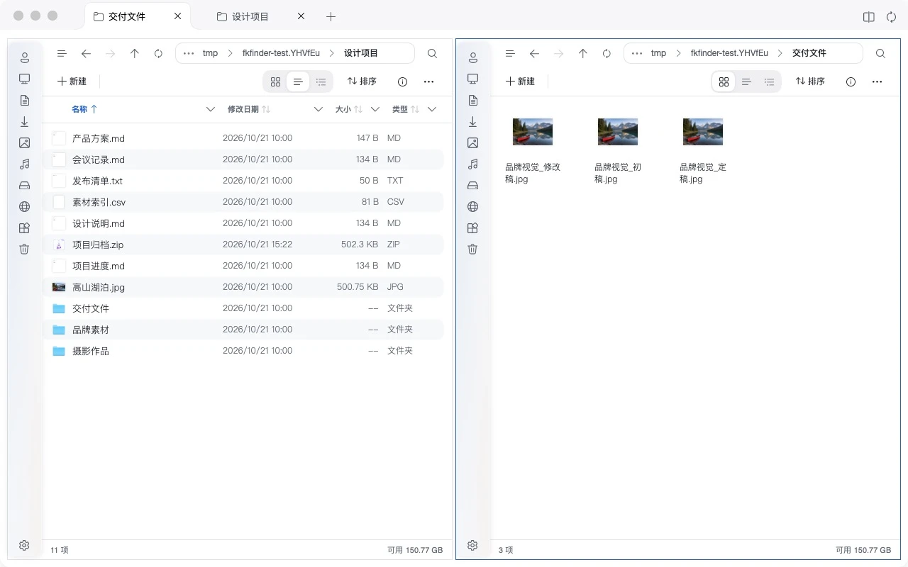

Mac Explorer et le Finder
Le Finder est le gestionnaire de fichiers intégré à macOS. Mac Explorer est un gestionnaire libre conçu pour afficher des dossiers côte à côte, combiner des règles de renommage et rechercher le texte indexé de PDF et d’images.

Organiser des dossiers côte à côte
Le Finder peut ouvrir plusieurs emplacements dans des onglets ou des fenêtres. La vue scindée de Mac Explorer affiche plusieurs dossiers dans un même espace de travail. Pour ranger un projet, ouvrez Téléchargements à gauche et les archives à droite pour contrôler les deux emplacements avant de déplacer les fichiers.
Renommer des fichiers par lot
Le Finder peut remplacer ou ajouter du texte et appliquer un format de nom. Mac Explorer permet de combiner plusieurs règles dans l’ordre. Vous pouvez remplacer le préfixe d’un nom de photo, puis ajouter un numéro. L’aperçu permet de vérifier chaque nom, de repérer les conflits et d’exclure certains fichiers.
Recherche et compatibilité
Mac Explorer recherche le texte indexé des PDF et le texte déjà reconnu dans les images. Ces fonctions servent à classer des documents numérisés, à reproduire un renommage ou à vérifier régulièrement deux dossiers. Mac Explorer nécessite macOS 14 ou une version ultérieure et fonctionne sur les Mac avec puce Apple ou processeur Intel.